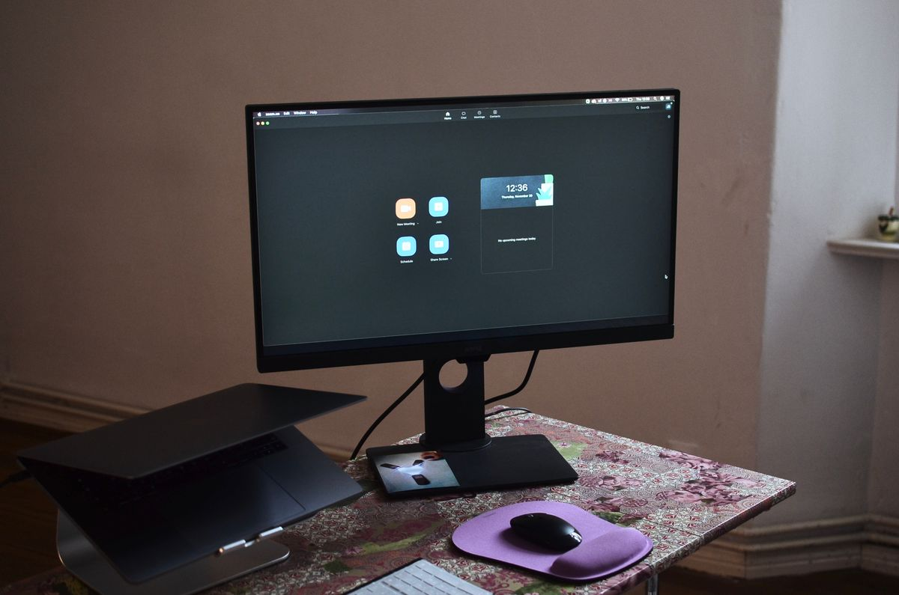
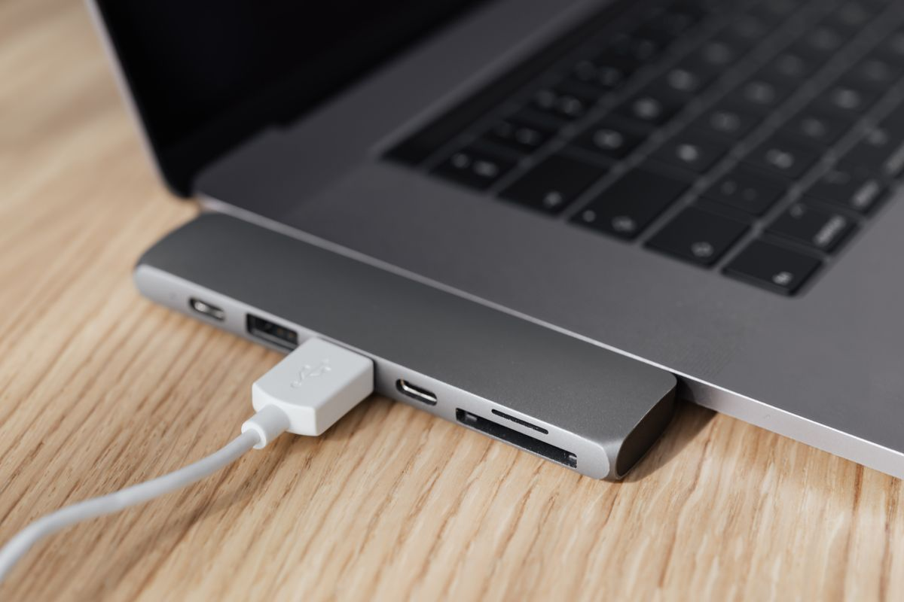
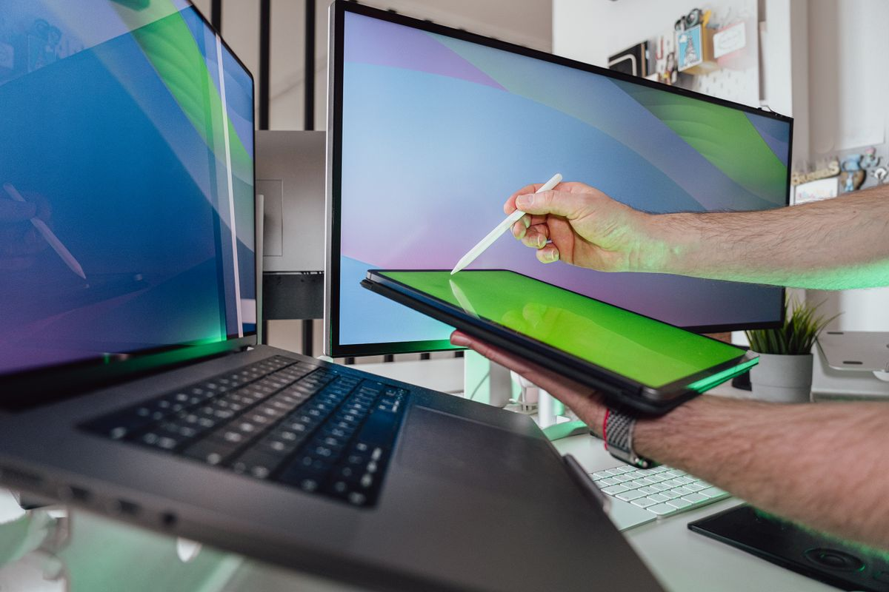

จอมอนิเตอร์พกพา: ทางลัดสู่การจัดโต๊ะทำงานสองจอสำหรับคนที่ต้องเดินทางหรือมีพื้นที่จำกัด
จอมอนิเตอร์พกพา (portable monitor) ช่วยให้ทำงานสองจอได้ทุกที่ รวมเกณฑ์เลือกซื้อทั้งขนาด ความละเอียด ช่องเชื่อมต่อ น้ำหนัก และรุ่นที่น่าสนใจ 2026
อัปเดต กรกฎาคม 2026
หลายคนรู้ดีว่าการทำงานแบบสองจอช่วยเพิ่มประสิทธิภาพได้มาก ไม่ต้องสลับหน้าต่างไปมาระหว่างเอกสาร อีเมล และโปรแกรมทำงาน แต่ปัญหาคือไม่ใช่ทุกคนที่มีพื้นที่โต๊ะพอสำหรับจอตั้งโต๊ะขนาดใหญ่สองจอ หรือบางคนต้องเดินทางทำงานนอกสถานที่บ่อยจนพกจอใหญ่ไปด้วยไม่ได้ จอมอนิเตอร์พกพา (portable monitor) จึงเป็นคำตอบที่ลงตัว เพราะบางเบา พับเก็บง่าย แต่ให้พื้นที่หน้าจอเพิ่มขึ้นทันทีเมื่อต้องการ
ทำไมจอพกพาถึงเปลี่ยนวิธีทำงานได้จริง
จอพกพาส่วนใหญ่เชื่อมต่อกับโน้ตบุ๊กผ่านสาย USB-C เส้นเดียวที่ส่งทั้งภาพและไฟเลี้ยง ทำให้ตั้งค่าได้ในไม่กี่วินาทีโดยไม่ต้องเสียบปลั๊กแยก เหมาะมากกับคนที่ทำงานตามคาเฟ่ ห้องประชุม หรือบ้านหลายที่ เพราะพกพาไปไหนก็ได้พื้นที่ทำงานแบบสองจอเหมือนอยู่ออฟฟิศ นอกจากนี้ยังเหมาะกับคนที่มีโต๊ะทำงานขนาดเล็กในคอนโดหรือห้องพัก เพราะเมื่อไม่ใช้งานสามารถพับเก็บหรือตั้งพิงข้างจอหลักได้โดยไม่กินพื้นที่มาก
เกณฑ์การเลือกซื้อจอมอนิเตอร์พกพา

ขนาดหน้าจอ ขนาดยอดนิยมอยู่ที่ 13-15.6 นิ้ว ซึ่งใกล้เคียงกับหน้าจอโน้ตบุ๊กทั่วไป ทำให้พกพาสะดวกและวางคู่กับโน้ตบุ๊กได้พอดี หากต้องการพื้นที่ทำงานมากขึ้นอาจเลือกรุ่น 17 นิ้ว แต่จะมีน้ำหนักและขนาดกระเป๋าที่ใหญ่ขึ้นตามไปด้วย
ความละเอียดและอัตราการรีเฟรช ควรเลือกอย่างน้อยระดับ Full HD (1920x1080) เพื่อความคมชัดของตัวอักษรและภาพ หากใช้งานด้านกราฟิกหรือดูวิดีโอบ่อยควรมองหารุ่นที่รองรับสี sRGB ครอบคลุมสูง
ช่องเชื่อมต่อ ควรมีทั้ง USB-C (รองรับ DisplayPort Alt Mode) และ HDMI เพื่อให้ใช้ได้กับทั้งโน้ตบุ๊ก, กล้อง, เครื่องเล่นเกม หรืออุปกรณ์อื่นที่ไม่มีพอร์ต USB-C
น้ำหนักและวัสดุตัวเครื่อง เนื่องจากจุดขายหลักคือการพกพา ควรเลือกรุ่นที่มีน้ำหนักไม่เกิน 1 กิโลกรัม และมีเคสปกป้องหน้าจอในตัวหรือแยกขาย เพื่อป้องกันรอยขีดข่วนระหว่างเดินทาง
ขาตั้งในตัว บางรุ่นมีเคสที่พับเป็นขาตั้งได้ในตัว ทำให้ไม่ต้องพกขาตั้งแยก ควรตรวจสอบว่าขาตั้งปรับมุมได้หลากหลายพอสำหรับการวางในแนวตั้ง (portrait) ด้วยหรือไม่ เพราะมีประโยชน์มากเวลาอ่านเอกสารยาว ๆ หรือดูโค้ด
รายการจอมอนิเตอร์พกพาที่น่าสนใจ
1. จอพกพา 15.6 นิ้ว Full HD น้ำหนักเบาพิเศษ
ตัวเลือกยอดนิยมสำหรับคนเริ่มต้นใช้จอที่สอง น้ำหนักไม่ถึง 800 กรัม จอความละเอียด Full HD สีสันสดใส มาพร้อมเคสหุ้มที่พับเป็นขาตั้งได้ทันที เชื่อมต่อผ่าน USB-C เส้นเดียวได้ทั้งภาพและไฟเลี้ยง เหมาะกับโน้ตบุ๊กรุ่นใหม่ที่รองรับ USB-C แบบเต็มฟังก์ชัน
จอพกพา 15.6 นิ้ว Full HD น้ำหนักเบา
2. จอพกพาหมุนแนวตั้งได้ พร้อมลำโพงในตัว
เหมาะกับโปรแกรมเมอร์หรือคนที่ต้องอ่านเอกสารยาว ๆ เพราะหมุนจอเป็นแนวตั้งได้สะดวก มีลำโพงสเตอริโอในตัวจึงไม่ต้องพกลำโพงแยกเวลาต้องประชุมนอกสถานที่ ตัวเครื่องมีขอบจอบางทำให้เมื่อวางคู่กับจอหลักดูต่อเนื่องเป็นธรรมชาติ
จอพกพาหมุนแนวตั้งพร้อมลำโพงในตัว
3. จอพกพาทัชสกรีนสำหรับงานกราฟิกและโน้ตดิจิทัล

รุ่นนี้รองรับการสัมผัสหน้าจอโดยตรง เหมาะกับคนที่ทำงานกราฟิก จดบันทึกด้วยปากกาสไตลัส หรือใช้เป็นจอสำรองสำหรับพรีเซนต์งานให้ลูกค้าดู ความละเอียดสูงกว่ารุ่นทั่วไปและรองรับการแสดงผลสีได้แม่นยำกว่า
4. จอพกพา 17 นิ้ว สำหรับพื้นที่ทำงานขนาดใหญ่แบบพกพาได้
เหมาะกับคนที่ต้องการพื้นที่หน้าจอมากขึ้นแต่ยังต้องการความคล่องตัวในการเดินทาง แม้จะหนักกว่ารุ่น 13-15 นิ้วเล็กน้อย แต่ให้พื้นที่ทำงานที่กว้างขวางกว่า เหมาะกับงานที่ต้องเปิดหลายหน้าต่างพร้อมกัน เช่น งานตัดต่อวิดีโอเบื้องต้นหรือดูสเปรดชีตขนาดใหญ่
จอพกพา 17 นิ้วสำหรับพื้นที่ทำงานกว้าง
สรุป
จอมอนิเตอร์พกพาเป็นการลงทุนที่คุ้มค่าสำหรับคนที่ต้องการเพิ่มพื้นที่ทำงานแบบสองจอโดยไม่ผูกติดกับโต๊ะใดโต๊ะหนึ่ง ไม่ว่าจะทำงานที่บ้าน คาเฟ่ หรือเดินทางบ่อย การเลือกขนาดและความละเอียดที่เหมาะกับลักษณะงาน พร้อมช่องเชื่อมต่อที่ครบถ้วนและน้ำหนักที่พกพาสะดวก จะช่วยให้จอพกพากลายเป็นอุปกรณ์ที่ใช้งานจริงทุกวัน ไม่ใช่แค่ซื้อมาแล้วไม่ได้หยิบใช้ ลองพิจารณาจากพฤติกรรมการทำงานของตัวเองว่าเน้นความเบาเพื่อพกพา หรือเน้นพื้นที่หน้าจอที่กว้างขึ้น แล้วเลือกรุ่นที่ตอบโจทย์นั้นให้ตรงที่สุด
บทความนี้มีลิงก์ affiliate เมื่อคุณซื้อผ่านลิงก์ เราอาจได้รับค่าคอมมิชชั่นโดยที่คุณไม่ต้องจ่ายเพิ่ม